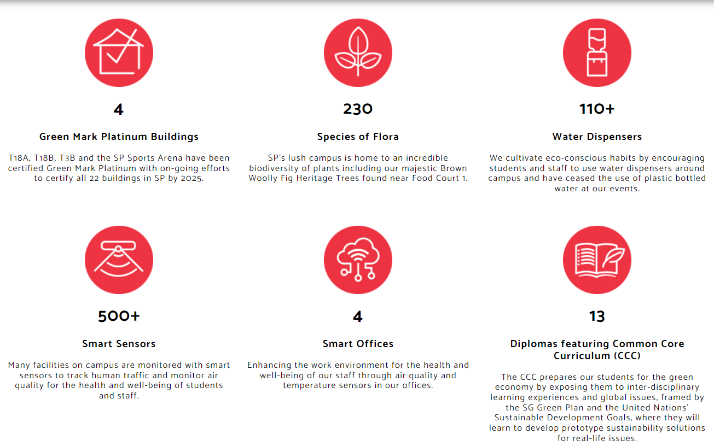
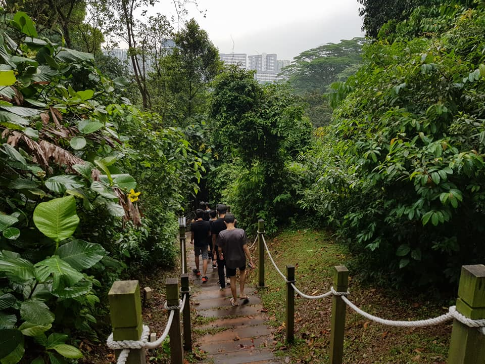
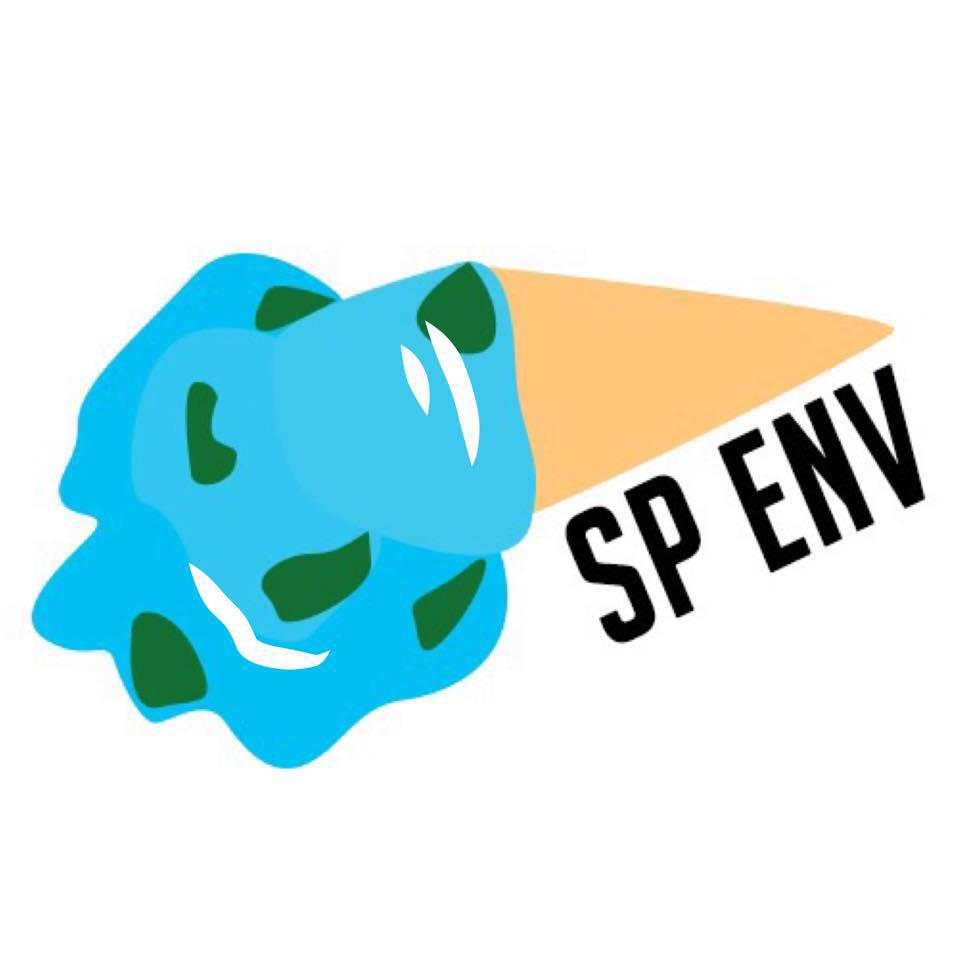
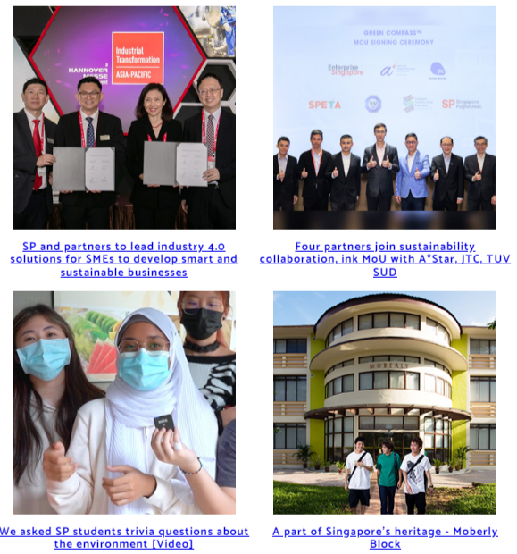

What Singapore Polytechnic has done for our Earth

Our school has made pledges and progress in the school to further the goal of a better environment.
Certifying buildings to be Green Mark Platinum Buildings, adding a wide variety of flora to campus,
promoting usage of water dispensers instead of plastic boittles, adding smart sensors,
building smart offices and Common Core Curriculum modules
are the great progress marks that
Singapore Polytechnic
(SP) has made.
SP Environment Club


The SP Environment Club
is committed to promoting environmental awareness and a sustainable lifestyle both on campus and beyond.
They organise many green campaigns and projects meant to make a difference in SP, such as roadshows and out of school trails.
Other Works and Partnerships

SP has also done much more work and wroked with many people in order to progress to a greener environment
all together. You can see what else they have done by clicking the image above.